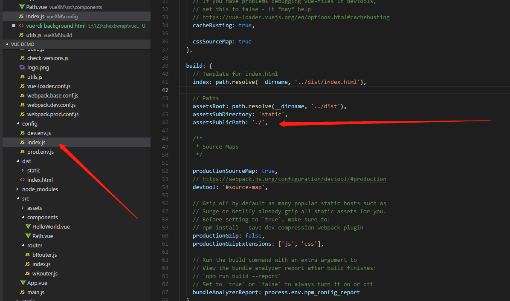
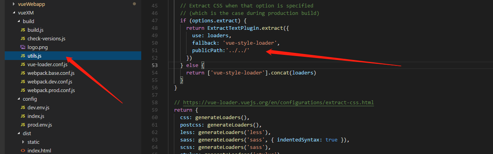
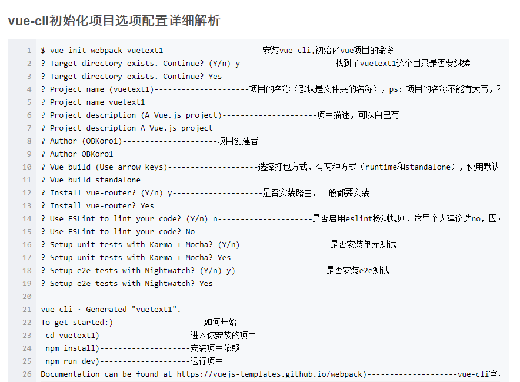
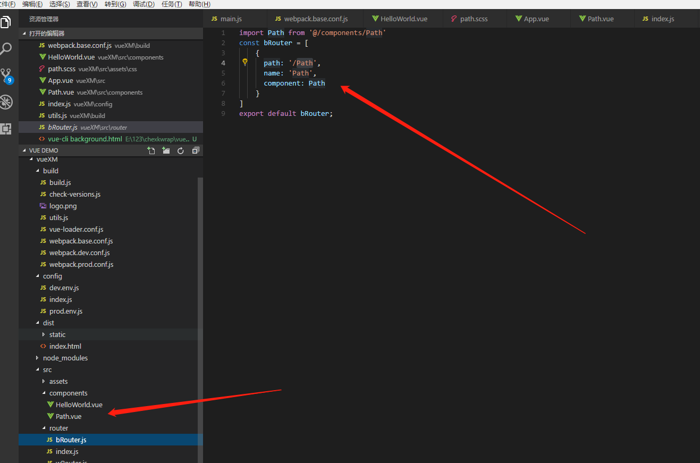
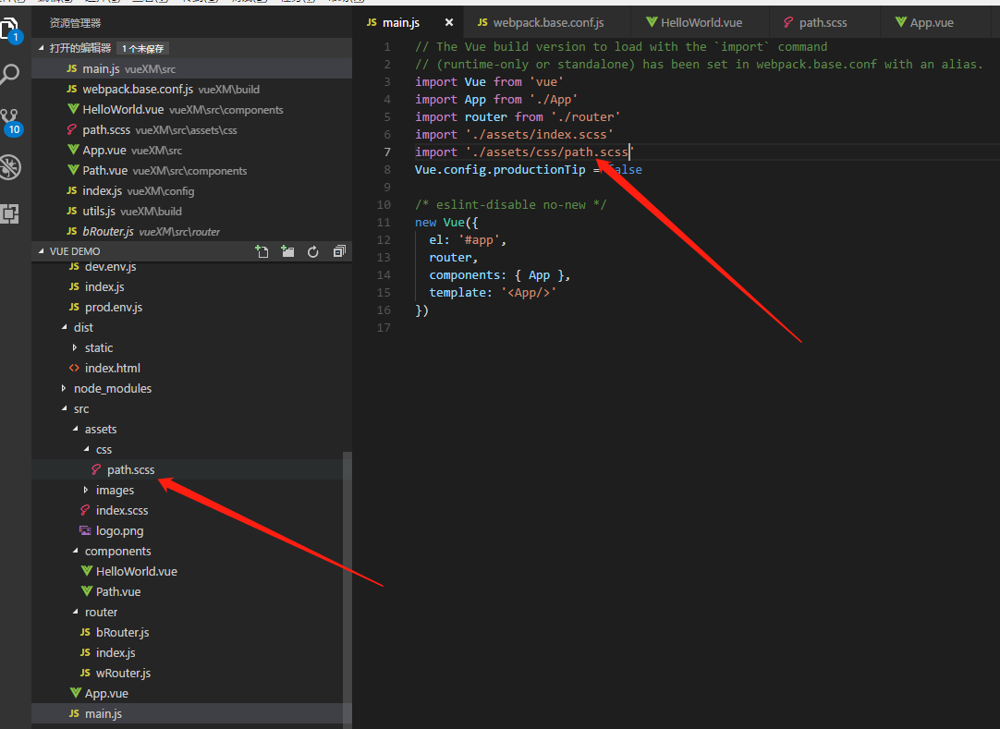
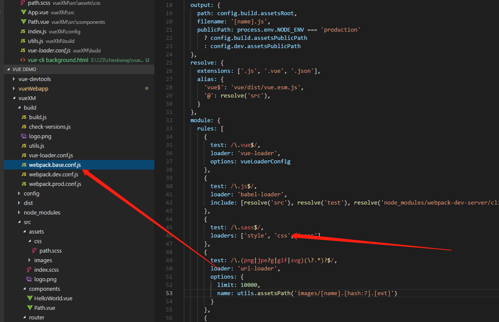
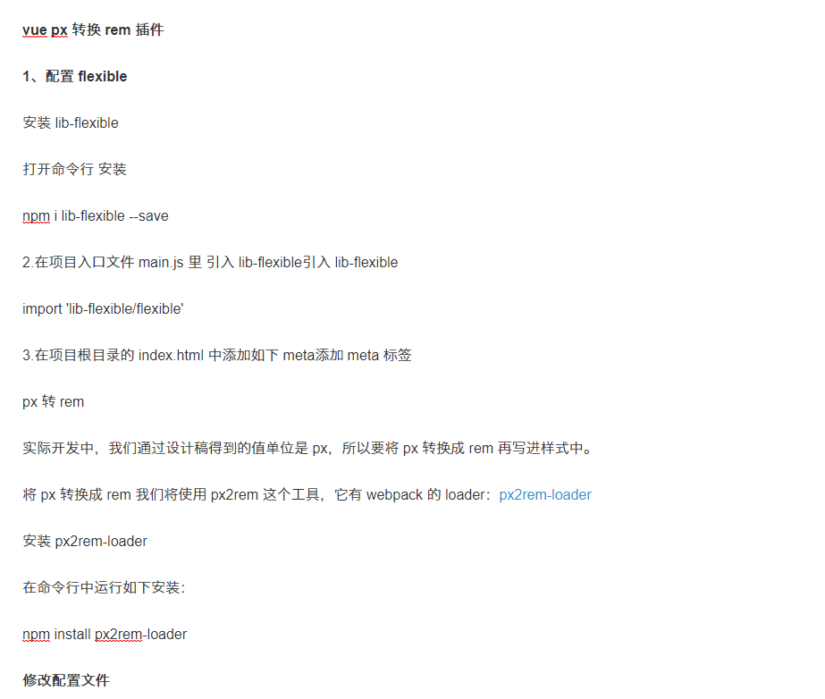
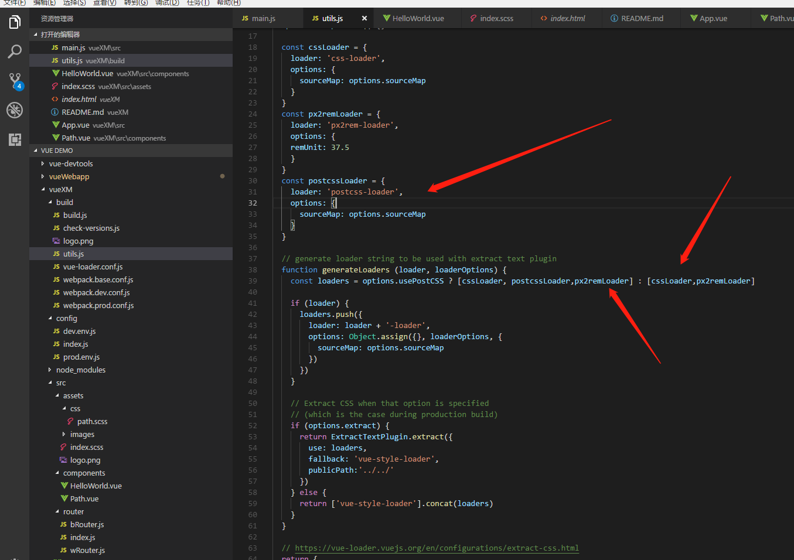

这里以vue-cli创建的项目为例
1、文件路径不对
修改的是打包下的路径而非dev
2、背景图片路径不对
找到文件路径并修改 路劲为新增路径
创建vue 项目
1、安装node （自带npm） 查看版本 node -v npm -v注意下载node.js版本要在4.0以上，避免版本过低影响使用
2、安装淘宝镜像 npm install -g cnpm --registry=https://registry.npm.taobao.org （可省略 cnpm 速度快）
3、安装webpack npm install webpack -g webpack -v 查看版本号
4、安装脚手架 npm install vue-cli -g vue -V V大写
5、启动项目 npm run dev 打包 npm run build
项目模块化管理
1、多人开发搭建路由

2、页面模块化管理
3、scss模块化管理
4、添加scss执行语法
5、rem字体转换
 